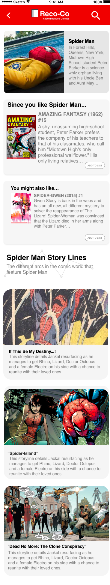
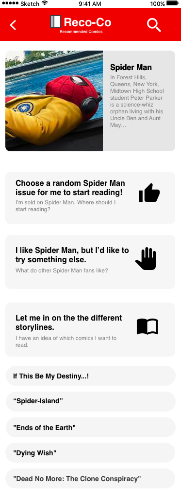
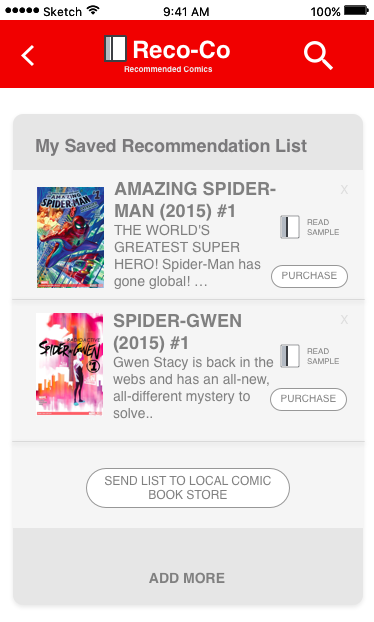

Reco-co (currently in-progress)
Background
I thought people had a hard time tracking releases by author's they liked, but through research I discovered that wasn't a problem! My research shifted to comic book readers who needed to track releases, but from interviews I discovered that users that had the biggest pain points were the comic readers who were just beginning to read comics.
Persona Based on Research - The Guy who wants to Read Comics

Product Definition Statement
An app for people new to comics that recommends comics.
User-Testing
Users were given a series of four tasks that took them through the journey of watching a Spider Man and needing a starting point to becoming a more intermediate fan who need needs more advanced features.
Findings
- Users found it easy to find a single comic.
- It was difficult to access and find the information for more advanced users.
- The text was lengthy (making it difficult to know what to do) and iconography was confusing.
- It was confusing to know where you were in the app.
The Solution

A "Character-based" Approach:
- Entry point: Searching for a character s/he is interested in
- Improved ability to search
- Dropdown listing of all characters in database
- Simplified navigation options (instead of explore, search)
Changes to Character Page
 
More Upfront about information.
- Directly recommending comics on the page
- More pictures/ less reading
Changes to Recommendation List

- Straight foward
- Automatically adds comic when you add to list